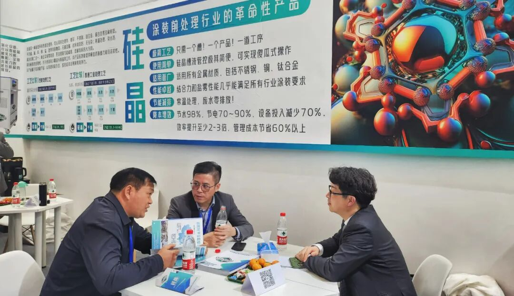

封面候选 · 渠道裁切与使用范围待客户确认
制造业 · 涂装前处理7、客户最关心的6个问题：硅晶表面处理到底靠不靠谱？
和拓化学 · 企业技术内容 / 排版稿 v2 / 1769 字符
案例+数据+实操，把真实情况都告诉你
做决策最怕信息不对称。换了新工艺，万一出问题怎么办？别人能用，我的产线行不行？今天不绕弯子，把客户问得最多的几个问题摊开讲，配上真实案例和实测数据，供你判断。

原稿配图 · 正文块 6；图示内容请客户复核一、真实案例：换了硅晶之后，到底改变了什么？
案例一：汽车零部件——不良率从20%降到1%以下
车用空气干燥罐，喷涂后要滚边铆合、折弯180°，原来用陶化工艺，漆面一折就裂，不合格率超过20%。
硅晶方案：连续3道硅晶B处理后直接烘干喷粉。效果：滚边开裂问题解决，不良率低于1%，同时废水零排放。 核心原因是硅晶与基材、油漆之间通过化学键结合（Si-O-Me共价键+交联反应），膜层随形性好，折弯不裂。
案例二：钣金喷涂——夏天不返锈，电费每月省1.5万
南方钣金柜体厂，梅雨季或换粉停线时工件特别容易返锈。硅晶改造后，冷轧板裸膜放置7~15天不返锈，产品质量稳定、返工率下降，电费一项每月省1.5万，水费和废水处理费几乎归零。
案例三：铝型材——1000小时盐雾
铝型材/铝单板行业，硅晶B-8506/B-8507替代传统无铬钝化，实现1000小时盐雾性能，常温处理、多用途、帮助企业降本增效。
案例四：大型结构件——手工擦拭，自然晾干也能行
户外大型结构件上不了流水线，用硅晶手工擦拭除油，表面自干后直接喷涂，结合力和耐腐蚀性均明显提升。
这些客户覆盖了汽车零部件、钣金、铝型材、大型装备——材质、工况、规模各不相同，但硅晶都跑通了。
二、常见误区：为什么很多工厂选错了工艺？
误区1：“前处理必须多道水洗才干净”
传统工艺7个水槽、多次漂洗，给很多人留下了“工序多=质量好”的印象。但硅晶是反应成膜型，不是“洗干净再钝化”的逻辑。它通过SiOH/SiNH基团与金属表面MeOH基缩水反应，一步完成除油+成膜，多余的水洗反而破坏反应界面。1~3道工序、常温、无漂洗，附着力照样0级、盐雾照样500小时起步。
误区2：“常温处理效果不如加热”
 和拓宣传册 2025 · 原图 10（宣传资料，指标须另附检测或测算依据）
和拓宣传册 2025 · 原图 10（宣传资料，指标须另附检测或测算依据）传统磷化40~50℃、陶化50℃，很多人觉得“加热才可靠”。但硅晶的反应机理是缩聚反应，常温下即可进行，无需热能驱动。南方钣金厂改用硅晶后产品质量“非常稳定”，就是实证。
误区3：“一种前处理只能对应一种材质”
传统磷化处理铁件和镀锌件往往要分开。硅晶对铁、镀锌、铝及合金、不锈钢、铜均有效，多条线共用一个槽、一种药剂，管理难度直线下降。
三、关于硅晶的常见问题答疑
Q1：硅晶涂层发白、不均怎么办？
通常有两个原因：①工件表面油污太重，硅晶渗透不及预期；②烘干前硅晶未完全铺展。
解决方案很简单——油污重的工件增加一道硅晶B处理（标准工艺本就可选1~3道），确保反应充分；控制槽液浓度和喷淋压力即可。
Q2：附着力偶尔不稳定，怎么排查？
大概率是槽液浓度偏离了最佳区间。和拓的FTT流体追踪技术2秒钟测出硅晶浓度，配合在线自动检测加药系统，实时补充、云端监控、手机可查。浓度稳定了，附着力就稳定。
Q3：从老工艺换到硅晶，产线要停多久？
不需要停产改造。 你的槽子、喷淋设备都能用，只需换药剂、调整槽位，边生产边切换。如果工件油污轻，甚至“一个槽、一个产品、一道工序”就能搞定。
Q4：所有材质都能用？
除镁合金等活泼金属需先去除脱模剂外，铁、镀锌、不锈钢、铝合金、铜合金均适用。卷材、汽车零部件、一般工业、手工擦洗各有对应型号（B-8516/B-8517/B-8518/B-8502/B-8506/B-8507/B-8510等）。
说在最后
硅晶不是什么“实验室黑科技”——它已经在汽车零部件、钣金柜体、彩涂板、铝型材、大型装备等多个行业跑通了量产，也经过了华为、中集等第三方机构的1000小时盐雾验证。
如果你的产线正面临环保压力、返工率高、成本难降、材质混线不好处理等问题，不妨先做个样品测试——拿几件你正在做的工件，用硅晶处理一下，喷完漆，划格、盐雾、折弯，该怎么验怎么验。
数据不会骗人，实物更不会。
免费送样测试通道： 如果你有具体的产线情况、材质要求或预算范围，欢迎联系和拓技术团队，我们可以帮你出一份针对你工厂的改造方案和成本测算，不收费，交个朋友。